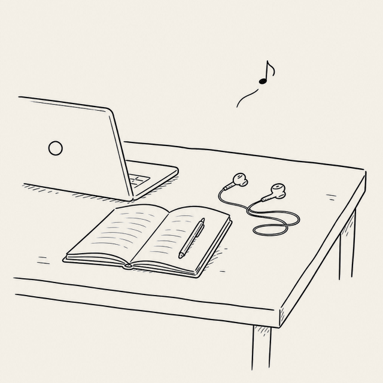
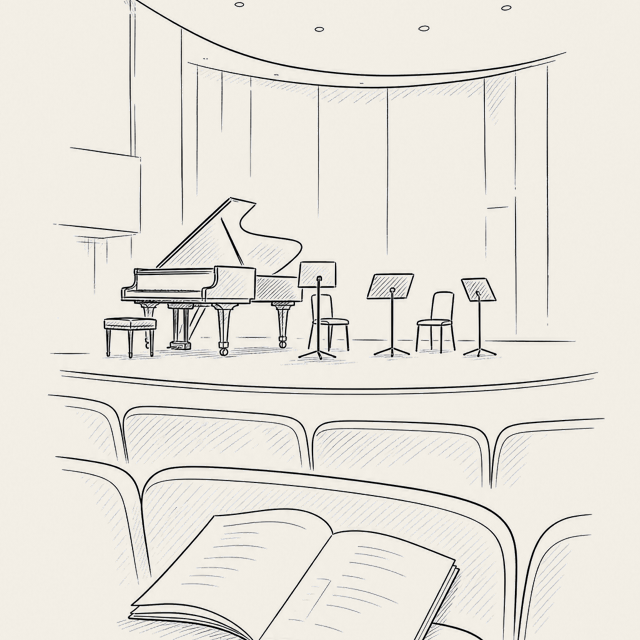

Columns · 처음 듣기
출발
우리는 일상 생활에서 여러 가지 이유로 클래식을 듣게 됩니다. 지금부터 그 의도를 이해하기 위한 여행을 시작합니다.
게시일 2026-07-25
우리는 일상 생활에서 여러 가지 이유로 클래식을 듣게 됩니다. 영상의 배경음으로 짧게 등장하거나, 게임의 효과음으로 쓰이기도 하고, 광고나 영화의 중요한 장면의 분위기를 강조하는 역할을 하기도 합니다.
보통 이런 경우 클래식은 배경에서 은은하게 깔려 우리가 크게 의식하지 못하거나, 하이라이트 부분의 극적인 음향을 통해 강렬함을 내뿜고 자연스럽게 사라집니다.

이와 다른 경로로 우리가 일부러 클래식 음악 라디오를 틀거나, 공연 실황 영상을 보거나, 지인의 클래식 연주회에 가기도 합니다. 개개인마다 차이는 있겠지만 보통은 러닝타임 내내 즐겁다기보다는, 아는 부분이 나왔을 때나 하이라이트처럼 집중이 되는 부분과 그렇지 못한 부분이 구분되기 마련입니다.

일상 생활에서는 콘텐츠를 기획한 의도에 따라 음악이 지겨움으로 다가오지 않도록 극도로 절제된 형태로 재생됩니다. 반면 여러 곡을 전체 프로그램으로 만든 경우에 우리는 그 작곡가와 프로그램과 연주자의 의도를 파악하기란 생각보다 어렵습니다. 아무 준비도 되어 있지 않다면 말이죠.
지금부터 한 걸음 씩 그들의 의도를 이해하기 위한 준비이자 여행을 시작합니다.